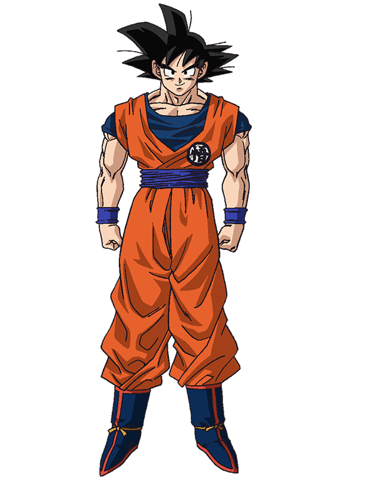
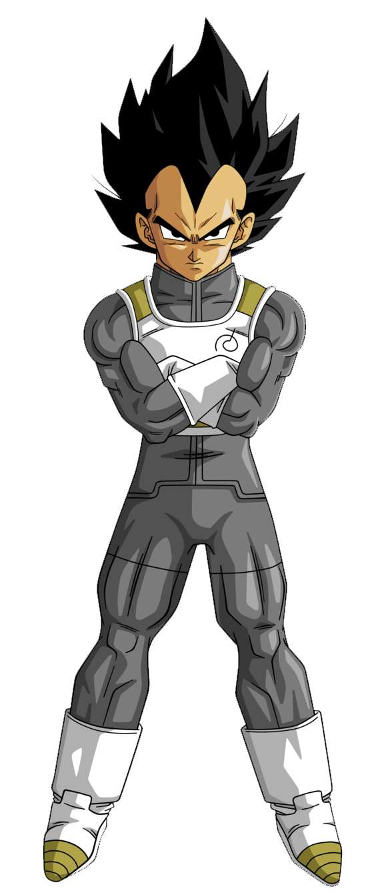
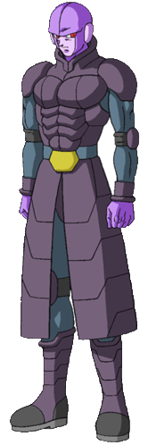
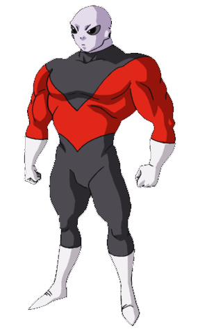
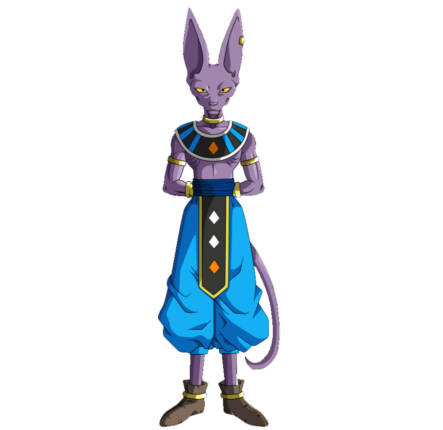
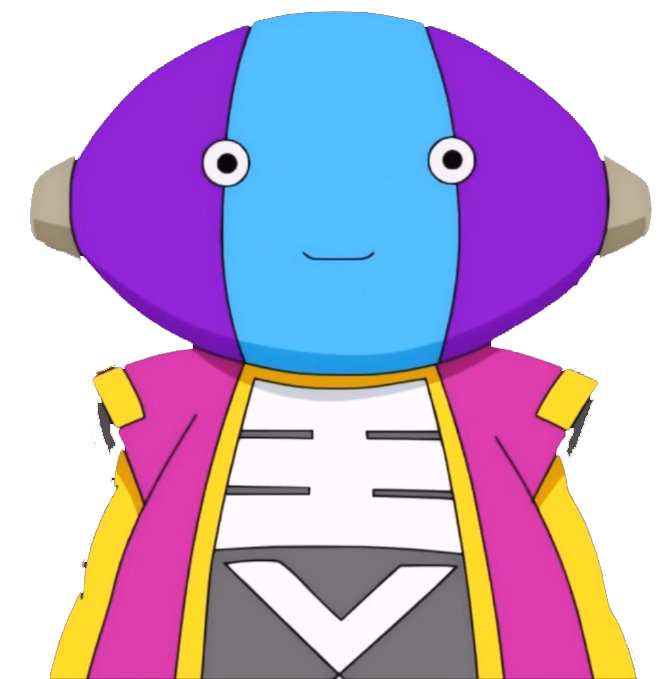

Goku 孫 悟空, Son Gokū), born Kakarot (カカロット, Kakarotto), is the main protagonist of the Dragon Ball metaseries created by Akira Toriyama. He is one of the last pure-blooded Saiyans in Universe 7.
NAME: son goku/ kakarot
GENDER: male
RACE: Saiyan
PERSONALITY: Goku is pure of heart, possessing no negative feelings or thoughts and highly loyal to his friends and family, even willing to sacrifice himself to save others
AGE: 46 or 49 years old during the Universe 6 Saga (Uncertain birth date. Spent 3 years in the Room of Spirit and Time)
CLASSIFICATION: Alien (Saiya-jin [Saiyan in the English Adaptations), Martial Artist, Deity
NOTABLE ATTACKS / TECHNIQUES:
Super saiyan form An advanced transformation assumed by extraordinarily powerful members of the Saiyan race which increases his Base Battle-Power by 50 times, and this is proportioned to his physical attributes giving him a great and even increase in strength, ki power, speed, stamina and durability.
Ki blast
Kamehameha
Solar flare
Spirit bomb
Kaio-ken
Ultra instinct
“ Come if you wanna! I'll take you on! Gather the strongest guys you can and come at me! I'll beat every last one of them! „
~ Goku to all the Gods

Vegeta (ベジータ), or Prince Vegeta, is the prince of the fallen Saiyan race and arch-rival to Goku.
PERSONALITY : cold-blooded , once was ruthless
GENDER: male
AGE: 52 during the universe 6 saga ( spent 4 years in the room of spirit and time )
CLASSIFICATION: elite saiyan warrior , Z-warrior
NOTABLE ATTACKS/ TECHNIQUES:
big bang attack
Double galick cannon
“ Your training isn't over when your body gives up, but when your mind gives up."
~ Vegeta

Hit (ヒット, Hitto) is a legendary hitman, and the strongest warrior in Universe 6.
NAME: Hit, "The Flawless Hit"
GENDER: Male
PERSONALITY: Hit is stoic and composed, constantly appearing emotionless and indifferent to most events.
AGE: Over 1,000 years old
CLASSIFICATION: Alien, Legendary Hitman
NOTABLE ATTACKS/TECHNIQUES:
Ki Blast,
Time Skip,
Time Leap,
Vital Point Attack,
Parallel World,
>
Jiren (ジレン) is a Pride Trooper and the strongest fighter of Universe 11.
NAME: jiren aka jiren the gray
GENDER: male
AGE: unknown
PERSONALITY: Jiren devotes everything to justice and never acts for selfish reasons, he lives to protect Universe 11. He is a very brave and disciplined individual, remaining unfazed.
Classification : pride trooper
NOTABLE ATTACKS/TECHNIQUES:
Superhuman Physical Characteristics,
Martial Arts, Ki Manipulation, Barrier Creation,
Flight, Precognition, Resistance To Time Stop (Broke through Hit's Time-Leap) and
Empathic Manipulation, Regeneration (Mid-Low. Healed a hole in his chest),
Able to block intangible attacks (Deflected Hit's intangible ki blast that had phased through other objects

Beerus (ビルス Birusu), also known as the God of Destruction Beerus (破壊神ビルス)
NAME: Beerus/Bills
GENDER: Male
AGE: Hundreds of millions of years old
PERSONALITY: Beerus is powerful, yet lazy and playful (like most cats). His similarities to cat-like behavior also display in his love for long sleep sessions and how he grooms himself. Beerus is always in a bad mood when he wakes up from his deep slumber, but becomes less grumpy the more awake he is.
CLASSIFICATION: God of Destruction
NOTABLE ATTACKS/TECHNIQUES:
God of Destruction Super Energy Sphere
Wrath of the God of Destruction
Pressure Point Attack
"Before any creation must come destruction!"
~ Beerus

Grand Zeno (全王 Zen’ō, lit. "King of All"), the Omni-King[1], is one of the kings of the 8 Universes, one of the two entities who stands above the entire multiverse, alongside his future counterpart, Future Zeno.
NAME: Grand Zeno , zeno ,king of all
GENDER: male
AGE unknown
PERSONALITY: Zeno's childish behavior is shown to act in careless, irresponsible, and amoral ways, having destroyed six of the eighteen universes after a bout of anger.
NOTABLE ATTACKS/TECHNIQUES:
flight
earsee
magic materiazaltion
yacchaina fist
